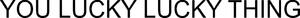

Trade Mark Journal No.2025/026 27 June 2025
WO0000001858654 (9,14,18)
Office of origin: New Zealand
Date of International Registration:22 April 2025
Date of designation in the UK:
22 April 2025

International priority date claimed: 10 April 2025
(New Zealand)
(1290030)
- Class 9
- Sunglasses; eyewear; prescription eyewear; optical glasses; cases for sunglasses; chains for sunglasses; frames for sunglasses; frames for eyewear; frames for glasses; straps for sunglasses; sunglass cases; spectacles; spectacle cases; glasses cases; spectacle chains; spectacle cords; spectacle frames; spectacle lenses; parts and accessories for eyeglasses; containers for eyewear; cords for eyewear; covers for smartphones; covers for tablet computers; bags adapted for laptops; protective carry cases and covers adapted for phones, cameras, personal computers, tablet computers, hand held computers, laptop computers, personal music players, personal digital assistants, electronic organisers and electronic notepads; parts, fittings and accessories for the aforesaid goods.
- Class 14
- Jewellery; jewellery bags, empty; charms made of common metals [jewelry]; charms made of common metals [jewellery]; leather jewelry boxes; leather jewellery boxes; jewellery boxes of leather; jewelry boxes of leather; sterling silver jewelry; jewellery made from silver; jewelry made of gold; talismans [jewellery]; talismans [jewelry]; jewelry for women.
- Class 18
- Travel handbags; handbags; handbags, not made of precious metal; handbags, not of precious metal; leather handbags; fashion handbags; clutch handbags; slouch handbags; clutches [handbags]; small handbags; travelling handbags; evening handbags; multipurpose handbags; ladies' handbags; multi-purpose handbags; handbags of leather; travel purses [handbags]; handbags for ladies; straps for handbags; imitation leather handbags; small clutch handbags; artificial leather handbags; handbags for men; multi-purpose purses [handbags]; chain mesh handbags; imitation leather purses [handbags]; straps for purses [handbags]; small clutch purses [handbags]; handbags of imitation leather; handbags made of leather; handbags incorporating rfid blocking technology; handbags authenticated by non-fungible tokens [nfts]; handbag straps; bags; shoulder bags; carrying bags; luggage, bags, wallets and carrying bags; work bags; bucket bags; shoulder bags for use by children; purses [leatherware]; purses; purses of leather; leather purses; small bags for men; wash bags, not fitted; tote bags; tote bags for carrying wine; leather bags, suitcases and wallets; leather bags and wallets; leather bags; belt bags; bags of leather; hobo bags; bum bags; wash bags for carrying toiletries; key bags; coin purses made of leather; wristlet bags; clutch bags; evening bags; men's bags; diaper bags; traveling bags; traveling bags [leatherware]; waist bags; leather coin purses; canvas shopping bags; carry-all bags; duffle bags; duffel bags; kit bags; carry-on bags; make-up bags; clutch purses; shoe bags for travel; luggage and carrying bags; wallets of leather; leather wallets; trolley bags; all-purpose carrying bags; bags for sports; garment bags for travel; baby diaper bags; weekend bags; wallets made of leather; satchels; travel bags; gym bags; cross-body bags; messenger bags; wallets; evening purses; leather briefcases; leather suitcases; coin purses [leatherware]; leather baggage tags; baggage tags of leather; artificial leather backpacks; leisure bags; briefcases; nappy bags; beach bags; card wallets [leatherware]; card holders [wallets]; credit card wallets; rfid blocking wallets; wallets incorporating card holders; wallets for attachment to belts; coin holders in the nature of wallets; leather luggage straps.
SABEN LIMITED
Representative: AJ PARK, Aon Centre, Level 22,, 1 Willis Street, Wellington 6011, NEW ZEALAND